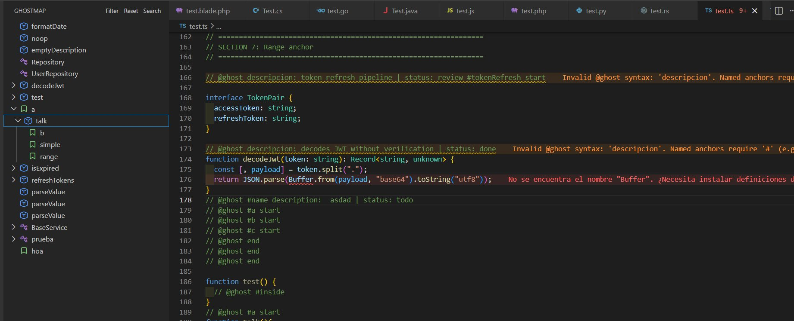

Your code,
mapped.
GhostMap turns @ghost annotations
into a live project map inside VS Code -
a Ghost Tree that reflects your code's real structure, updated as you type.
Built around a clear vocabulary
Every piece of GhostMap has a name. These concepts carry through V1, V2, and beyond - the same words in the extension, the docs, and the codebase.
Ghost Tree v1
The live navigable map of your file. Symbols and anchors organized by real code structure - not folders, not your memory.
Ghost Ranges v1
Delimit a section of code with #name start … end and group everything inside under a named node. Refactors, migrations, hot zones.
Ghost Anchors v1
Named anchors (#security) create independent nodes. Contextual anchors attach silently to the nearest symbol.
Ghost Index v1
The loading engine. Persists your file's tree so GhostMap loads in milliseconds - no recalculation on every open.
Ghost Threads v2
Code discussions tied to a specific block. Context, decisions, and Slack threads - attached to exactly the code they describe.
Ghost Graph v2
Visual flow maps that trace how variables, functions, and files connect - from declaration to last usage.
19 languages.
One consistent map.
GhostMap's language engine stacks LSP, Tree-sitter WASM, and regex fallback so your Ghost Tree works regardless of what's installed.
See full support matrix →What GhostMap looks like in your editor

Where GhostMap is going
V1 is a focused tool for any dev. V2 adds collaboration and intelligence for teams.
- Ghost Tree - live symbol map
- Ghost Ranges - named code sections
- Ghost Anchors - contextual & named
- Ghost Index - instant load engine
- Status tracking (todo, review, done…)
- Diagnostics & quick fixes
- 19 languages supported
- Hover details & code actions
-
Ghost Comments invisible annotations
Annotations move out of source code into the Ghost Index. Your code stays clean; GhostMap renders them as overlays.
-
Ghost Threads code discussions
Per-block conversations - decisions, Slack context, and open questions - attached to the exact code they describe.
-
Ghost Graph code flow
Visual graphs tracing variables and functions across files, from definition to last use.
-
Agile integration enterprise
Status changes flow to Jira. Sprint urgency surfaces in the Ghost Tree. Automatic commits on review approval.
Start mapping your project today.
Free, open source, and built for any developer. Install in seconds.